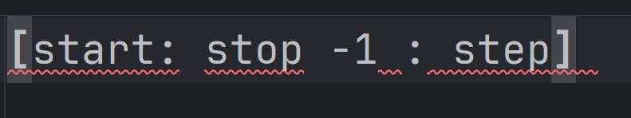
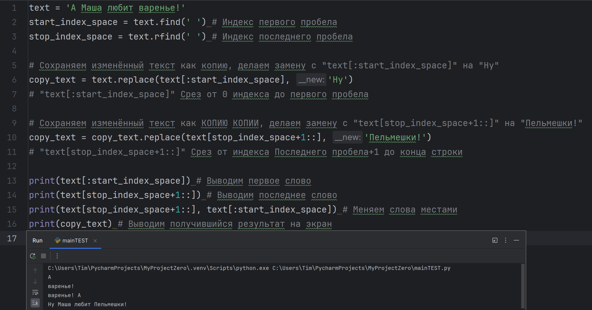
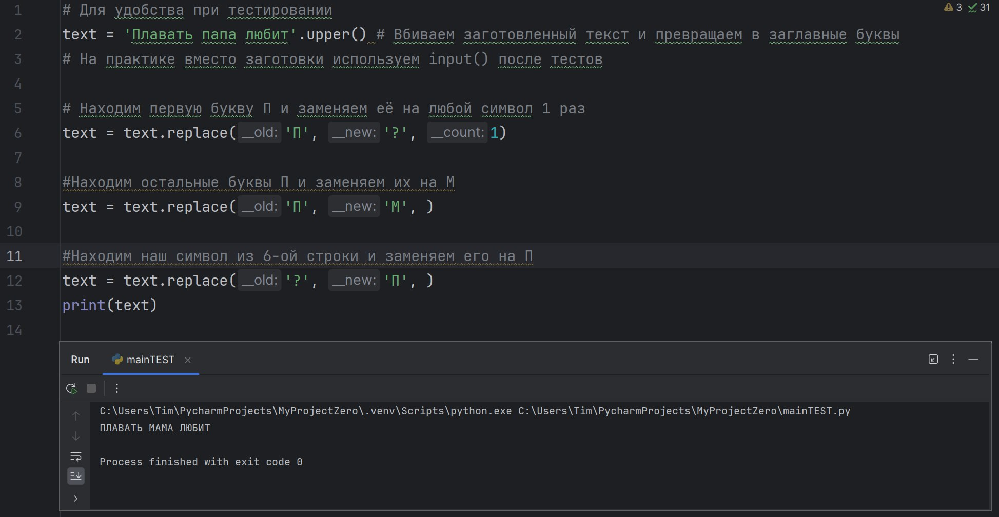
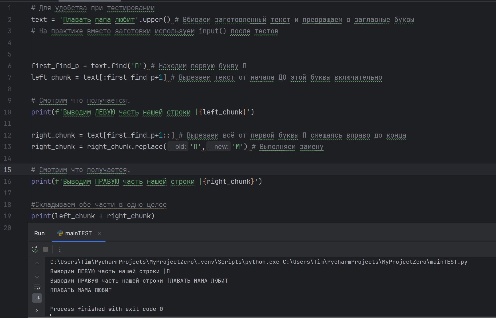
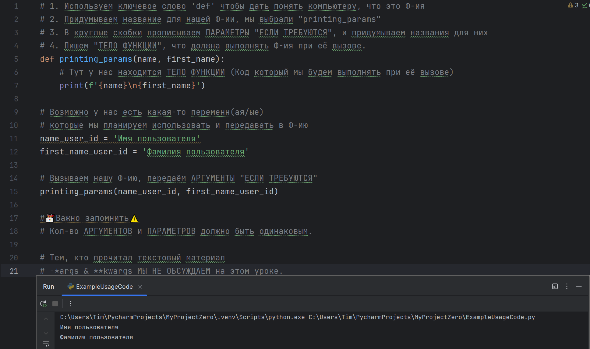
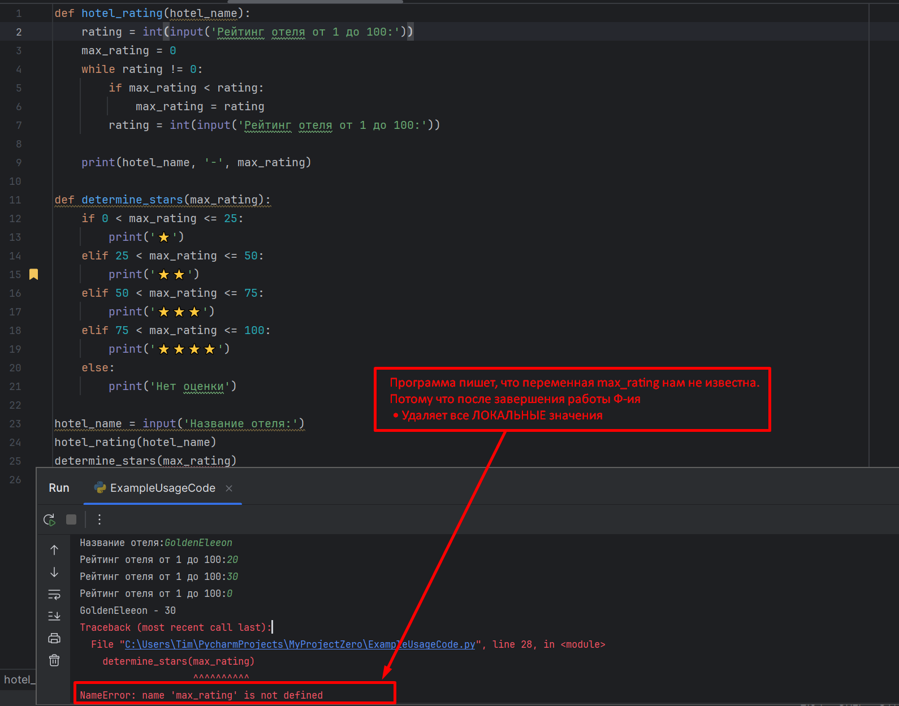
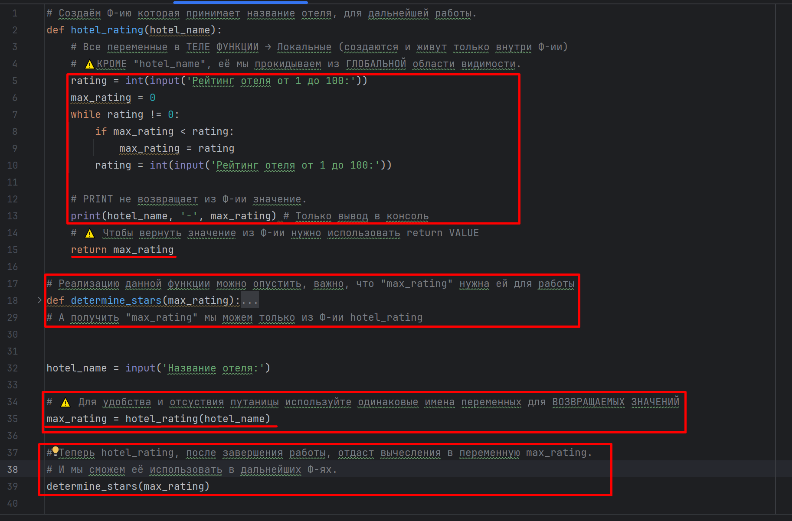
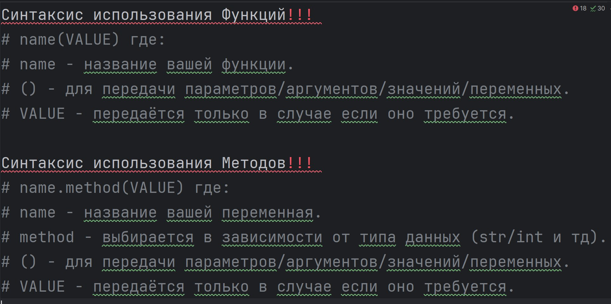
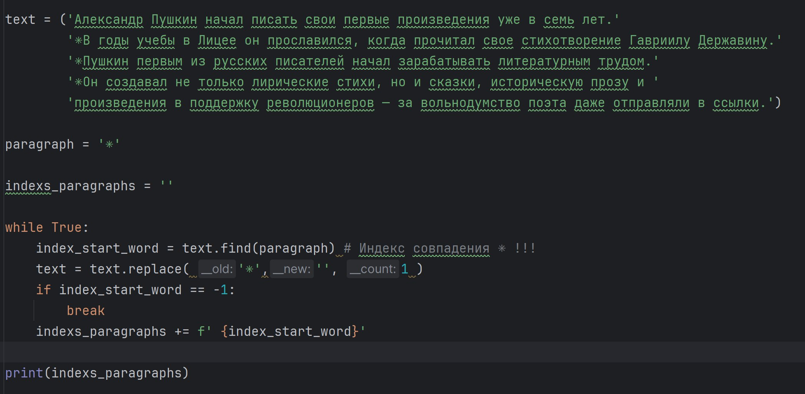

Индексы и срезы строк в Python.

Поиск подстрок в строках.
Замена и подсчёт подстрок.
Повторяем методы строк и их применение. На занятии будем решать сложные задачки.



Создание и вызов функций, параметры и аргументы.

Область видимости переменных в Python.


Что такое рекурсия и как её применять.
Практикуем рекурсии: Создаём мини-проект.
Цикл for и генератор range().
Практические задачи на цикл for.
Разбиение строк на части с помощью split() и объединение с join().
Создаём мини-проект с использованием цикла for.
⚠️ Повторите пройденный материал и закройте все долги для сдачи теста! ⚠️
Информацию по долгам можно уточнить ТОЛЬКО у технической поддержки.

